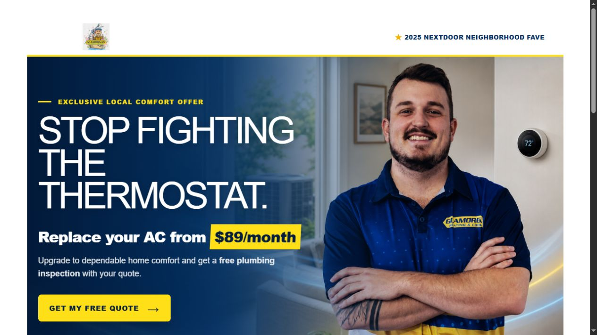

Live sampleLead generationHVAC
Glamorgan AC Replacement Promotion
A local lead-generation page created for an equipment-led Nextdoor campaign. The page connects a financing-focused offer, neighborhood credibility, and a short HighLevel quote path.
View Live Page